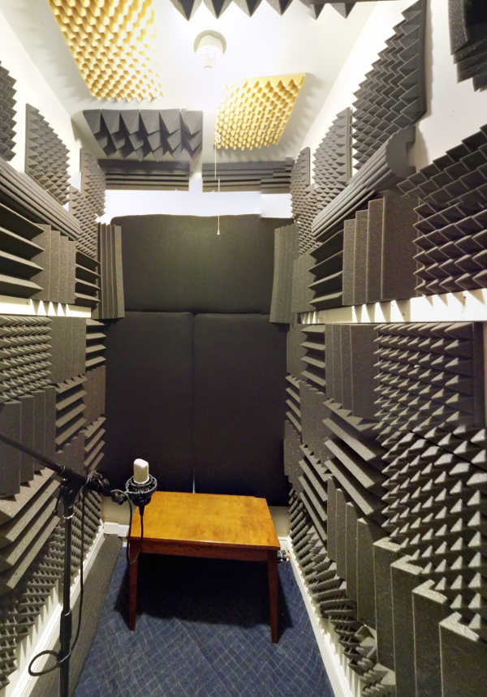

LMP Asks #15: An interview with Scott Petersen
This month LMP talked to Scott Petersen, SoundCollider programmer, teacher, composer and maker enthusiast.
Hi Scott! Thank you for taking the time to talk with us. Could you tell us a little about who you are?
I am a composer, laptop improviser, guitarist/pianist/whatever-instrument-you-havist working at Yale University as the Technical Directory of the Yale Music Technology Labs (YalMusT) and the Program Director of the Open Music Initiative. I live in New Haven, CT with my wife Heather and our cat Bjork.
Tell us more about YalMusT and the Yale Open Music Initiative. Who is the target audience and what do you do?
YalMusT stands for Yale Music Technology Labs. We have two labs that serve the Music Department and the Yale community at large. Both are designed to facilitate the creation, production, and notation of music.
The Open Music Initiative (OMI) aims to supplement the classes and facilities available in the department and through the YalMusT labs by adding a Linux cluster so music can be made with open source software, and through workshops and hangouts where we teach open source software (programming, recording, editing, etc) and hardware (synths, Arduino, Raspberry Pi, etc.)
Making things seems important to you. You also lead workshops at MakeHaven. What is that?
MakeHaven is a DIY maker space in New Haven, Connecticut where I live. I strongly believe that fostering ingenuity and creativity is transformational and makerspaces are doing this all over the world. We live in a global society that is more-and-more a consumerist black-box. We are all addicted to our devices, phones, computers, etc, yet very few people understand how these devices function let alone how they are constructed. This creates a dependency on the companies that make our devices and reduces our ability to control what technology we use and how we use it. By teaching people how things function and are constructed and by encouraging tinkering and experimentation, we free people from this form of technological bondage.
And of course, my maker leanings are the same that inspired me to learn Linux and begin moving away from proprietary computer hardware and software. Once you buy into, say, the Apple ecosystem you are trapped. Yes it works, yes it’s stable, yes in many ways it’s great. However, once Apple starts removing ports, removing the ability to install after-market upgrades, or control what applications are installed on your computer/iPhone, there’s nothing you can do about it: you have already bought into a (very expensive) hardware/software system (a Technosystem if you will) and extricating oneself from it can be difficult as it requires the learning of new tools, new software, a new OS, etc.
The alternative (or the cure) is flexibility, knowledge, and commitment to the open technologies that empower people. I highly recommend checking out a makerspace near you. I think you’ll find the people friendly and very interesting. End of rant :D
How do analog electronics supplement the software you use and teach?
As an artist, I think we should use every tool, technology and philosophy at our disposal to aid in the creation of our work. Sometimes that means studying carpentry, electronics, or philosophy. I never want to be in the middle of a project and realize I need to know something that I do not, because even a temporary derailment of the creative process is extremely onerous. Beyond that, electronics specifically opens an entirely new world of sonic and interactive options.
I also find it artistically helpful to have constraints and working with electronics, especially hacked-together instruments, demands a specific way of interacting with the instrument.
Pedagogically, I feel it is important to teach the basics of electronics and synth-building because it shatters the illusion that sounds are simply the result of pressing buttons and twiddling GUI knobs. It also fosters an appreciation of how the gear in our studios works and can lead to interests in related fields such as the burgeoning Eurorack and 500 series modular synthesizer movements (These are hardware modular synthesizer standards that have enabled small workshops, even individuals, to create and sell their own modular DSP and synthesis components.)
You also seem to like and promote SuperCollider quite a lot.
Oh yes. SuperCollider (SC3) is probably the single most important tool to me as a composer and musician. I made the decision long ago to invest the time, confront the very steep learning curve, and go with what I thought then, and still do, is the best overall audio programming language out there. It’s simply so powerful I couldn’t imagine doing without it. [Imagines it. Shudders]
I have used SC3 for live coding, recording, editing, improvising, and algorithmic composition. In fact, my dissertation was composed exclusively using SC3. The program is now extremely well-documented and has a thriving user base of helpful, kind people. Keep your eyes on LMP for my upcoming SC3 tutorials! And, in the meanwhile, check out the mailing list and sccode.org for an idea of what people are doing with SC3.
How did you get into FLOSS/Open source?
I first became aware of Linux when I accepted an assistantship in the Eastman Computer Music Center while in doctoral studies circa 2004. The pedagogical model at the ECMC was to teach both proprietary and open source software using Apple OS and Linux. At the time they were using Fedora 3 to teach Csound, PureData, etc.
I took the advanced computer music course on that system while acting as teaching assistant for the introductory course on the Macintosh system. It was not love at first byte (sorry!) with Linux because just getting audio and video drivers to work at the time took upwards of 3 days. Eventually, though, and with a switch to Debian systems (Ubuntu and later Crunchbang #!) I became very comfortable and, eventually, enamored with Linux as a viable alternative to my Mac.
These days, with distros like KXStudio doing all of the heavy lifting for you, and software like SuperCollider and Ardour, there’s really no impediment to making the change. That said…
Do you feel that anything is lacking in the FLOSS music area?
An FFT audio editor capable of matching the functionality of Adobe Audition. Unfortunately, I cannot imagine doing commercial work without this program. I absolutely deplore Adobe’s business model, specifically the cloud-subscription model, but Audition’s noise-removal and editing feature set is simply too good to do without.
Audacity recently added an FFT spectrogram editing function, but it is in its infancy. Hopefully it can grow to match Audition’s functionality some day and we can all finally be rid of Adobe once and for all!
You are also a composer. Can you describe what kind of music you make, what your workflow looks like (and any links so that the readers can listen to it)?
A quick listen to the music available at www.scacinto.com will prove, I think, that my music varies stylistically and structurally from piece to piece. I don’t like doing things twice, so pieces written consecutively may not appear to come from the same person. (This is all a polite and academic way of saying that I bore easily, especially of compositional methods.)
I have written music for orchestra, small ensemble, with and without electronics, solo laptop music, live coding, tape music, installation, etc, etc. I think the one guiding principle I follow is to be true to the moment (in terms of compositional honesty.)
I also strive to never be boring musically, but my success or failure in that endeavor is not for me to decide. One of the more fun/silly projects I work on from time-to-time is the 375 Aural Assault project. It’s almost exclusively SuperCollider code, and almost exclusively noisy. Think about it as a Drano™ for the ears ;) (Drano is a commercial plumbing product in the US...)
What is NodeNoise and why are you in the process of starting a company?
This is sort of a joke. When my wife and I were looking for apartments, we saw one that had a bedroom with a 5'x4.5'x8' closet. I immediately thought it might make a good recording booth. We took the apartment and one of the first things I did was build bass traps (at MakeHaven) for the back of the booth. Since then I have done a lot of recording in there for personal as well as a few commercial jobs.

NodeNoise is the business name I use for my commercial work. Ultimately, it would be great to grow the business and take on more AV work, but audio editing/recording jobs are few and far between these days. I’ve also considered using it as an avant/noise-based music label if only there were five more hours in every day...
...anyway, many thanks for talking with me and giving me the opportunity to expound a bit on some of the things that bring joy into my life.
Basic facts
Name: Scott Petersen
Homepage: https://scacinto.wordpress.com/
Workplace: Yale University
Title: Technical Director of the Yale Music Technology Labs, Program Director of the Open Music Initiative
Musical links
- www.375auralassaults.com
- https://scacinto.wordpress.com/scott-petersen/petersen-electronic/
- https://scacinto.wordpress.com/scott-petersen/petersen-acoustic/
Tools
- SuperCollider
- Ardour
- Calf plugins
- everything that comes with KXStudio